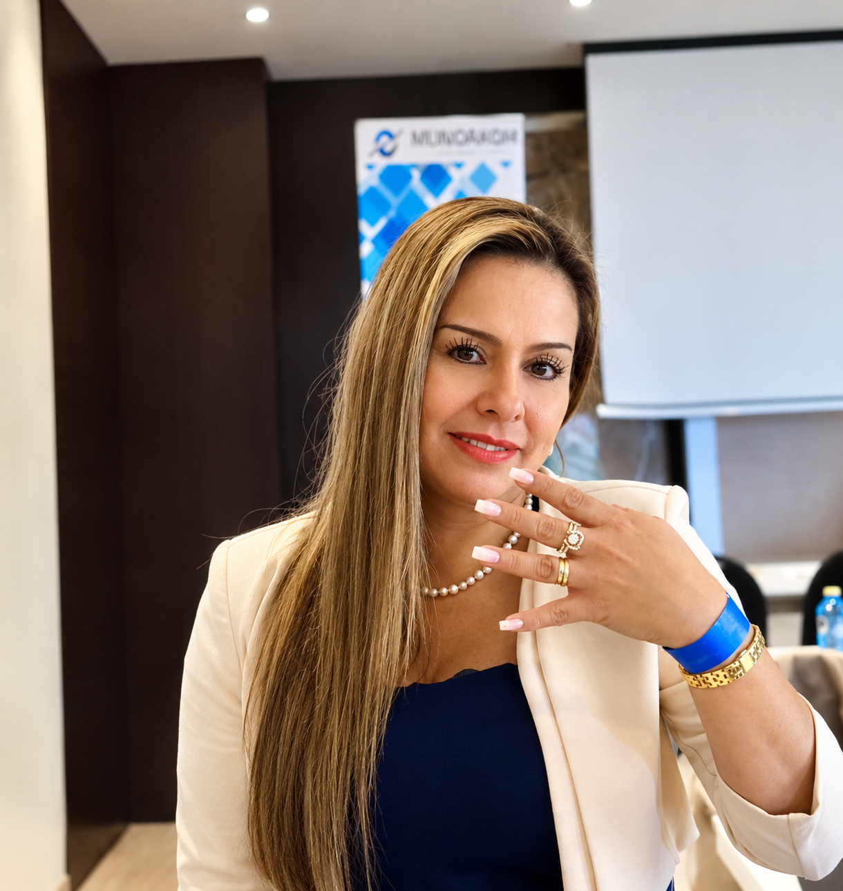

Judicial Investigaciones
Maggie Granados: tres personas denuncian presuntas irregularidades por más de $100 millones
Tres personas que solicitaron mantener su identidad en reserva señalan a Maggie Granados, una colombiana residente en España, por presuntas irregularidades en operaciones de inversión. Los denunciantes aseguran que las cantidades involucradas superarían los $100 millones de pesos colombianos, cuestionan documentos legales relacionados con las operaciones y afirman que el caso fue puesto en conocimiento de las autoridades.

Tres personas señalan presuntas irregularidades en operaciones de inversión
Tres personas contactaron a este medio para relatar sus experiencias con operaciones de inversión que, según sus declaraciones, estarían relacionadas con Maggie Granados, una ciudadana colombiana residente en España.
Las fuentes aseguran que las cantidades involucradas superarían conjuntamente los $100 millones de pesos colombianos. Para establecer el alcance económico del caso, será necesario revisar los soportes de cada transacción, determinar cuánto dinero habría entregado cada persona y verificar si existieron devoluciones o pagos parciales.
De acuerdo con una de las personas consultadas, el acercamiento se habría producido mediante una relación de confianza que posteriormente dio paso a propuestas para invertir dinero a través de empresas presuntamente relacionadas con Granados.
“Ella se gana la confianza de las personas y luego las convence de invertir”, manifestó una de las fuentes consultadas, que solicitó mantener su identidad en reserva.
Los testimonios describen una dinámica que los afectados consideran cuestionable. Sin embargo, sus declaraciones deben contrastarse con documentos, comunicaciones y otras fuentes independientes para establecer las circunstancias de cada operación.
Más de $100 millones bajo cuestionamiento
Uno de los aspectos centrales de esta investigación es el monto que, según los denunciantes, estaría involucrado en las operaciones.
Las fuentes sostienen que las cantidades entregadas superarían conjuntamente los $100 millones de pesos colombianos. Las condiciones de los acuerdos, los posibles rendimientos prometidos, los compromisos asumidos por las partes y el destino de los recursos son aspectos que deberán esclarecerse.
La existencia de una transferencia, por sí sola, no demuestra la comisión de una estafa. Para determinar qué ocurrió será necesario establecer el propósito de los pagos, las condiciones pactadas y las circunstancias que originaron las reclamaciones.
Denunciantes cuestionan la autenticidad de documentos legales
Otro de los puntos que forman parte de los señalamientos tiene que ver con la documentación legal que, según las fuentes, habría sido presentada durante las operaciones de inversión.
Los denunciantes cuestionan la autenticidad y validez de esos documentos y sostienen que existirían irregularidades que deben esclarecerse. Según sus versiones, la documentación habría generado dudas sobre las condiciones bajo las cuales se promovieron las inversiones.
Para determinar si existió falsedad documental o si los documentos carecían de validez jurídica, será necesario examinar los originales o copias verificables y contrastarlos con las entidades, profesionales o autoridades que supuestamente los emitieron.
La autenticidad, la validez jurídica y la veracidad del contenido de un documento son cuestiones diferentes. Por eso, las dudas planteadas por los denunciantes deberán verificarse antes de establecer conclusiones definitivas.
Este medio buscará verificar los documentos y conocer la explicación de la persona señalada antes de establecer conclusiones sobre su autenticidad o validez.
Pantallazos y transferencias serán examinados
Como parte del material remitido a este medio, las personas consultadas aseguran haber enviado capturas de pantalla de conversaciones y comprobantes de transferencias que, según explican, estarían relacionados con las operaciones cuestionadas.
Los documentos podrían contribuir a reconstruir la cronología de los hechos, identificar las condiciones en las que se solicitaron los recursos y determinar quiénes participaron en las transacciones.
El material deberá someterse a un proceso de comprobación. Será necesario revisar las fechas, los valores, los destinatarios y el contexto de las conversaciones, así como contrastar los documentos con otras fuentes cuando sea posible.
Las capturas de pantalla pueden aportar indicios, pero no siempre permiten verificar por sí solas la integridad de una conversación o la autenticidad de una transacción.
En una próxima entrega de esta investigación, este medio espera presentar los soportes que puedan verificarse y publicarse responsablemente, protegiendo los datos personales y financieros que no sean necesarios para comprender los hechos.
Cuestionamientos sobre las empresas vinculadas
Los denunciantes también cuestionan el papel de las empresas que, según sus testimonios, habrían intervenido en las propuestas de inversión.
Las fuentes plantean dudas sobre las actividades de esas sociedades y su relación con el dinero entregado. Para establecer si existieron irregularidades será necesario identificar las razones sociales, consultar los registros mercantiles y examinar la documentación empresarial y financiera disponible.
La investigación deberá determinar qué papel desempeñó cada empresa en los acuerdos, quién recibió los pagos y qué obligaciones quedaron establecidas con los inversionistas.
Por ahora, la información recibida no permite concluir que las sociedades sean empresas fachada ni que hayan sido utilizadas para cometer delitos. Esas afirmaciones requieren pruebas que permitan respaldarlas.
El caso habría sido puesto en conocimiento de las autoridades
Las tres fuentes aseguran que el caso ya fue denunciado ante las autoridades competentes. Este medio buscará establecer qué entidad recibió las denuncias, cuándo fueron presentadas y si existe un número de radicado que permita consultar el estado de las actuaciones.
Esta información permitirá diferenciar entre la presentación de una denuncia y la existencia de una investigación formal o de decisiones adoptadas por las autoridades.
También se buscará establecer si los señalamientos relacionados con la documentación fueron incluidos en las denuncias y si alguna autoridad ha realizado verificaciones sobre la autenticidad o validez de los documentos cuestionados.
Hasta contar con información oficial, el alcance de las actuaciones y las eventuales responsabilidades deberán considerarse asuntos pendientes de esclarecimiento.
Una investigación que continúa abierta
La información recibida plantea varios interrogantes: ¿cuáles fueron las condiciones de las inversiones?, ¿qué empresas participaron?, ¿quién recibió los recursos?, ¿qué compromisos se pactaron?, ¿qué ocurrió después de los pagos? y ¿cuál es la autenticidad y validez de los documentos presentados?
Resolver estas preguntas exige revisar cada caso por separado y contrastar los testimonios con documentación comprobable.
Este medio buscará la versión de Maggie Granados y de las empresas que puedan identificarse como participantes en las operaciones, con el propósito de conocer sus explicaciones y permitirles responder a los señalamientos.
La investigación continuará a medida que se obtenga y verifique nueva información. Cualquier conclusión deberá sustentarse en documentos comprobables, testimonios contrastados y, cuando corresponda, información oficial.
Por ahora, tres personas aseguran haber entregado más de $100 millones en operaciones de inversión que consideran cuestionables. Además, ponen en duda la autenticidad y validez de determinados documentos legales relacionados con esas operaciones. Tanto el destino de los recursos como la documentación y las eventuales responsabilidades siguen pendientes de esclarecimiento.